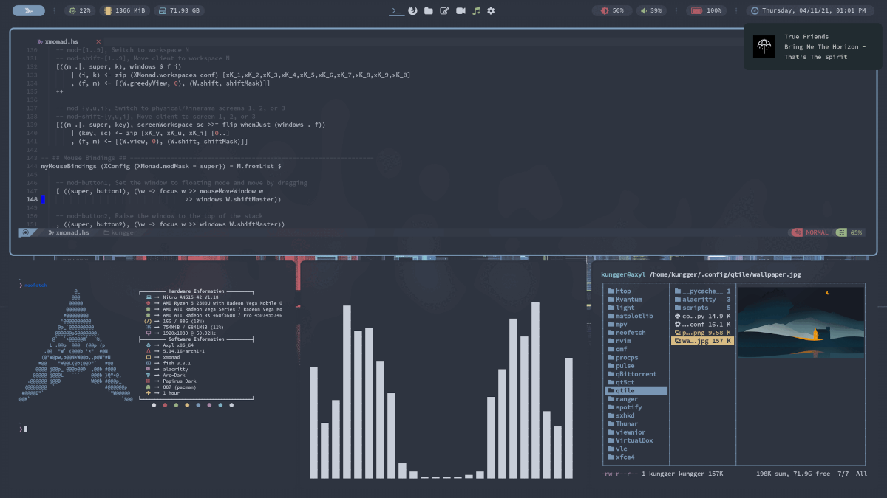

Welcome to Axyl.
Axyl is a Linux distro centered on Wayland Compositors.
Level up your productivity with a fully customized Hyprland layout that will fit all your needs.

What is Axyl?
Tiling Windows
Axyl focuses fully on Wayland Compositors, so we can give you
the best experience for advanced users.
Solid Software
This distro comes with your favorite programs like foot, kitty, sddm, Hyprland,
and NvChad.
Minimal Base
Built on Arch Linux, Axyl follows the KISS principles, keeping the base system minimal yet flexible.
I tested Axyl and installed it. Runs like a Ferrari
and no issues at all. It is a simple distribution with all
I need to have the job done.